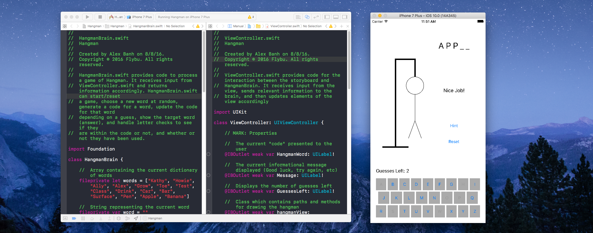

Hangman
Hangman was our first major project as a team. After learning some of the basics of swift and xcode during the Expedia Hackathon, we decided to put that knowledge to use. Our overall goal was to apply what we had learned to create a functional app. During the process we also learned more about MVC principles, xcode intricacies, and git. Learning to work with git was especially important because of the possibilities it offers for collaboration.
When setting out to make Hangman, we wanted to meet some fundamental goals. In the end we met all of our initial goals for the app, which are listed below:
- Create a simple functional app to play a game of hangman
- Familiarize ourselves with the xcode development environment
- Become comfortable with using Swift as a programming language
- Gain experience in working with the xcode storyboard
- Learn to use git as a collaboration tool
The hangman app is currently finished and playable. However we plan on adding new features and working on planned features as soon as we settle into our fall quarter schedules!
Check it out on Github!dubhacks
Dubhacks is an upcoming Hackathon at the University of Washington that we intend to participate in! We'll update this blurb with what we did after the event!
Expedia Hackathon
Where it all started. The Expedia Hackathon was our first time working together as a group and also the first hackathon we attended. Although we didn't complete a project during the hackathon, we did learn more about mobile development and how to go about doing it. The knowledge gained from the hackathon allowed us to create our first iOS app, hangman!